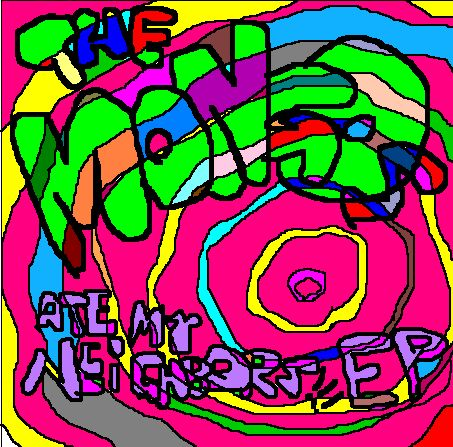

The Mongos
ARE HERE
OBEY!!!
RO-MAN THE ALMIGHTY (dispositivo de beatbox y maquina de burbujas)
Ro-Man es miembro de la raza de los Ro-Mans, una casta extraterrestre de inteligencia superior y vasta ventaja en armamentos de destrucción genocida. En su imperativa misión de recorrer la galaxia conquistando planetas finalmente ha llegado a la Tierra para destruir a cada uno de los terrícolas (hu-mans) y plantar la bandera de los Ro-Mans sobre su superficie. Desafortunadamente, las leyes de libre exterminio interracial en el planeta Ro-Man acaban de ser cambiadas con el arribo del partido libertario al poder y como cualquier otro Ro-Man viajante en misión conquistadora se vé privado de poder utilizar sus métodos convencionales de aniquilación exterminadora. Buscando nuevos caminos para evitar quebrantar las nuevas leyes que lo subordinan, Ro-Man opta (tras un cursillo intensivo de marketing) por una alternativa un poco más sutil y quizás perversa: infiltrarse entre los hu-mans y dominarlos a través de un impacto cultural. El mismo consiste en la formación y difusión a pequeña escala de una agrupación musical con miras al inmediato reclutamiento de las masas juveniles. El primer paso: encontrar a dos desprevenidos adolescentes de bajo coeficiente intelectual y fácil dominio.
HU-MAN MONGO (bajo de dos cuerdas y berridos)
Capturado por Ro-Man una noche en su cuarto, Hu-Man Mongo había fritado su cerebro con sendas dosis televisivas de comedias adolescentes y películas de serie B y Z en VHS’s regrabables durante la mayor parte de su pequeña vida. Esto le comenzó a deteriorar el funcionamiento de sus neuronas hasta dejarlo en un estado poco menos que vegetativo. Los electroshocks reanimantes provistos por Ro-Man lo mantienen en pié y medianamente funcional, por lo que sólo puede tocar el bajo con dos cuerdas (la gorda y la siguiente más gorda) y es alimentado a base de líquidos enlatados, principalmente schweppes, fanta y coca-cola, recargados regularmente en su casco-porta-bebidas que le envía los fluidos a su boca a través de pequeños tubos de plástico. Hu-Man Mongo apenas puede pronunciar un número limitado de palabras, lo que explica el ínfimo vocabulario empleado en las letras de las canciones que él vocaliza mecánicamente (apoyado naturalmente por descargas eléctricas que Ro-Man le envía a través de un cable enchufado en su esfínter).
HU-MAN PELUCA (guitarra psicotrónica y berridos)
Hu-Man Peluca (“La Criatura del Negro Lagomar”) solía llamarse Adrián y solía ser un joven de prospero futuro en la carrera de ingeniería, un auténtico orgullo para sus padres. Hasta que un día un trágico accidente relacionado con la codicia de inalcanzables bollones con galletitas lulú en estantes superiores le causaron un hematoma cerebral y la perdida total y absoluta de toda cordura terrícola. A partir de entonces dejó de reconocer a sus similares y se dedicó a hacer surf compulsivamente en las tranquilas aguas de Lagomar (un lugar negro si los hay) obsesionado con la caza de imaginarios pulpos gigantes que a través de cierto accidente nuclear se han propagado hasta las costas uruguayas con la intención de devorarse a los bañistas. Hu-Man Peluca se convence a si mismo de que estas criaturas son además invisibles gracias al “glow” de radioactividad que los rodea, por lo que la única manera de verlos es con un par de lentes 3D. Armado con un arpón, sus gafas y su tabla de surf, Peluca desaparece un día sin dejar rastro y no vuelve a saberse de él hasta la primera aparición en vivo del conjunto musicaloide de Ro-Man, ejecutando los acordes de altos decibelios psicotrónicos y aturdido aún por la paranoia pulpera.
CLICK EN LAS IMAGENES!!!


CLICK EN LAS TAPAS PARA BAJAR!!!
-

LICUAMIXER - 2010
- 
THE MONGOS ATE MY
NEIGHBORS - 2008
¡Ay mi ojo! EN VIVO
Abuelas Rabiosas
¡Ay mi ojo!
(No se supone que entren cosas ahí)Mongo Army EN VIVO
QuAtsch Remix